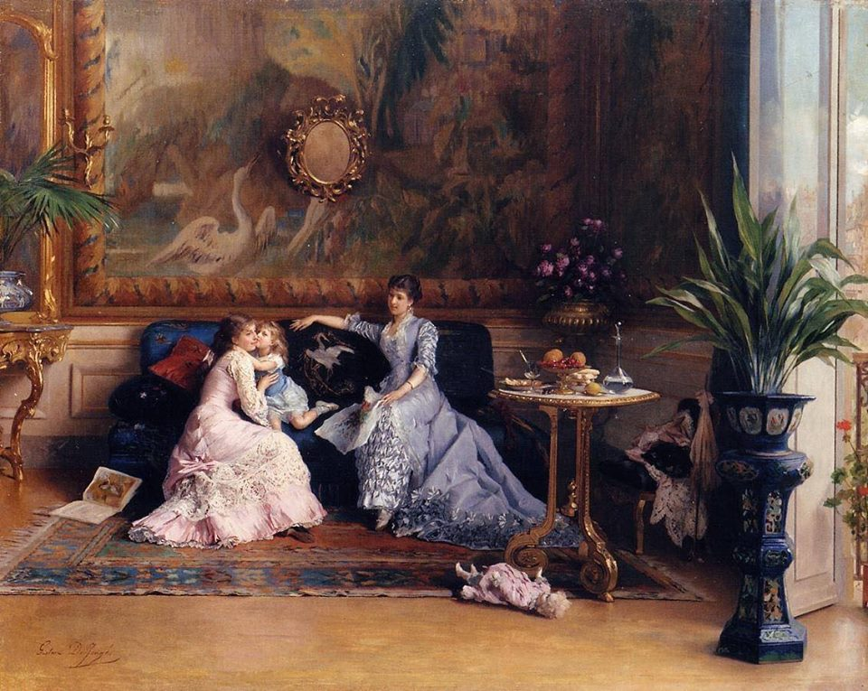

My name is Akhmad Badalov
I like to collect artworks created by contemporary artists
Leisure time is the thing that promps me to become engaged with it. I found it worth to spend the time.
Of course, I am not professional.
I have strong insight and amateurism into Professional Art.
My relatives consider me as critical person.

The majority of people believe that the element needed for a person in Art is critical thinking.
My favourite sport is swimming
This shapes your body perfectly
Back to the Home